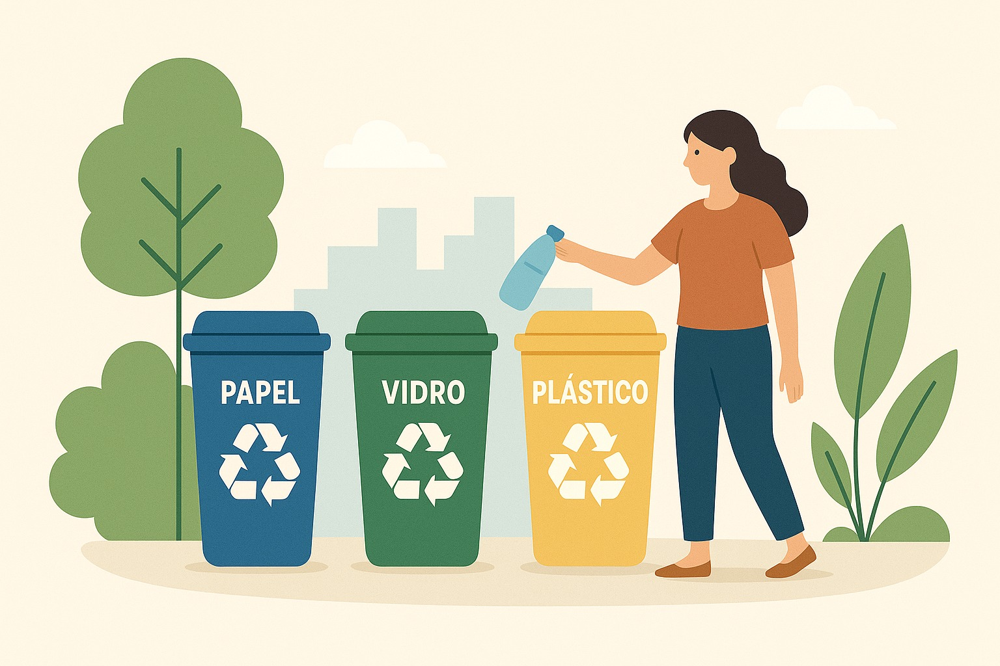
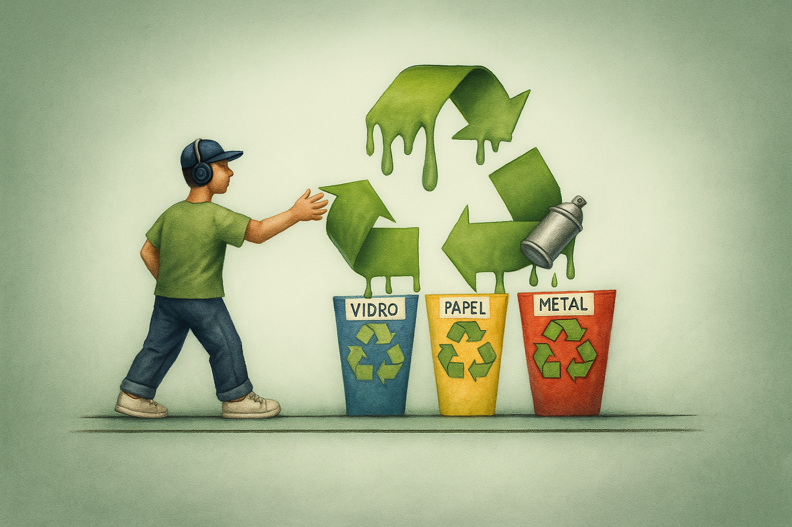
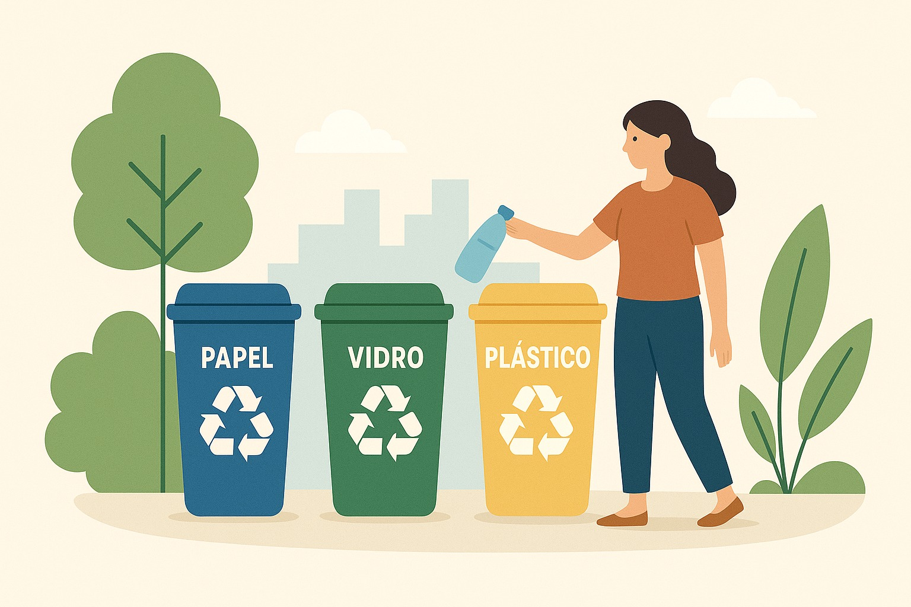
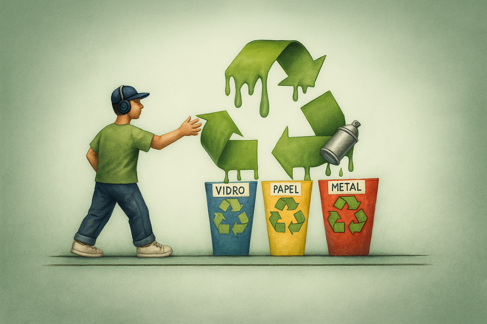

O que é?
Coleta seletiva é o nome dado ao processo de separação dos resíduos sólidos urbanos de acordo com o material predominante em sua composição. A coleta seletiva auxilia na reciclagem do lixo urbano que é produzido diariamente nas residências e nas ruas adiantando uma das principais etapas do processamento do material descartado, já que a sua separação é feita pela fonte geradora (indivíduos, estabelecimentos comerciais, empresas, etc.).
Funcionamento
A coleta seletiva funciona por meio do descarte dos resíduos em recipientes específicos, identificados por cores padronizadas. Cada cor corresponde a um tipo de material: azul para papel, vermelho para plástico, verde para vidro, amarelo para metal, marrom para orgânicos e cinza para rejeitos. Essa separação garante que cada resíduo siga para o destino adequado, permitindo a reciclagem, o reaproveitamento ou o descarte seguro.
O processo pode ser realizado tanto pelas equipes de limpeza urbana quanto pelos colaboradores dentro da própria empresa. A participação consciente de todos é essencial, pois evita a contaminação dos materiais, reduz riscos à saúde, diminui a poluição ambiental e assegura maior eficiência no tratamento do lixo.
Seguir corretamente esse procedimento não apenas contribui para a sustentabilidade, mas também protege vidas, já que o descarte incorreto de resíduos pode gerar acidentes, contaminações e danos sérios ao meio ambiente e às pessoas.
Incentivo Verde
O Projeto Incentivo Verde é uma iniciativa dedicada a promover a coleta seletiva e a conscientização ambiental de maneira prática e acessível. Seu propósito é incentivar pessoas, empresas e instituições a adotarem hábitos mais sustentáveis no dia a dia, contribuindo para a redução da poluição e do desperdício de materiais recicláveis. Além disso, o projeto fortalece a valorização de práticas responsáveis, gera impacto positivo para a comunidade e para o planeta e estimula a educação ambiental como ferramenta de transformação social. Acreditamos que pequenas atitudes, quando praticadas de forma contínua, podem construir um futuro mais limpo, justo e sustentável para todos.


 


